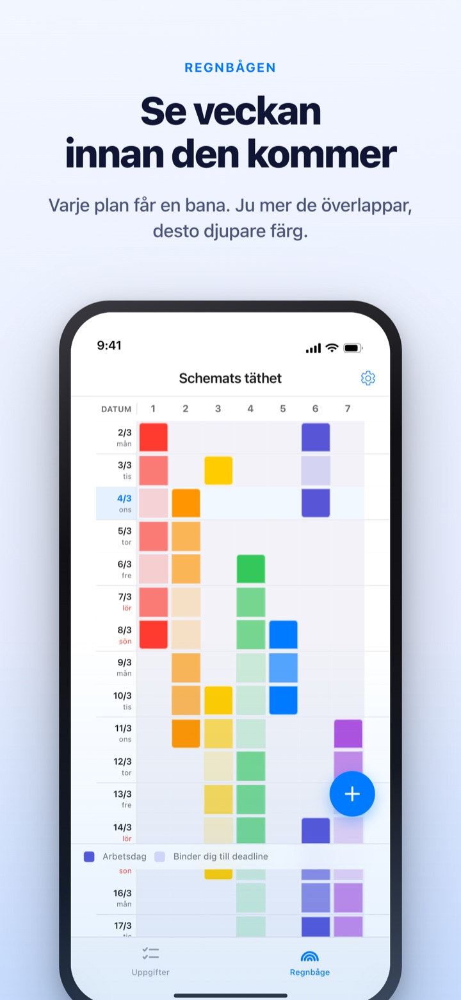
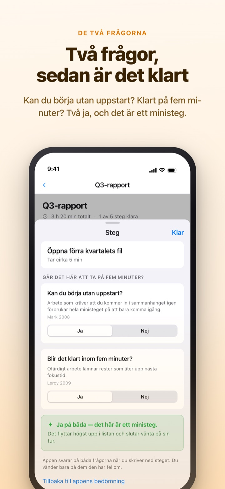
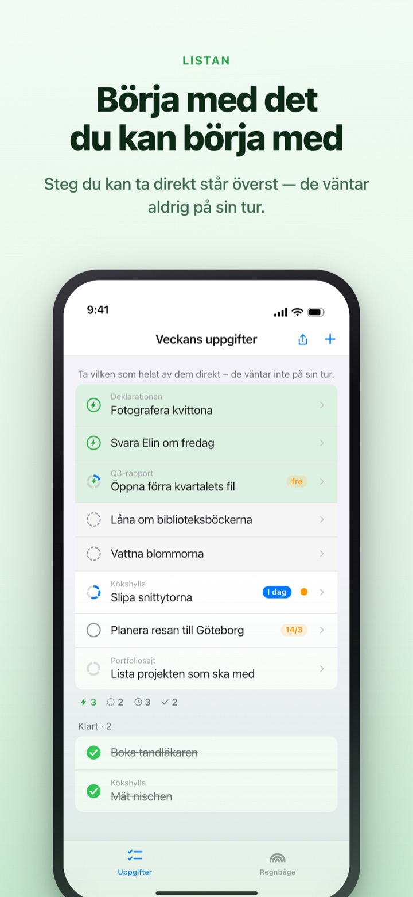
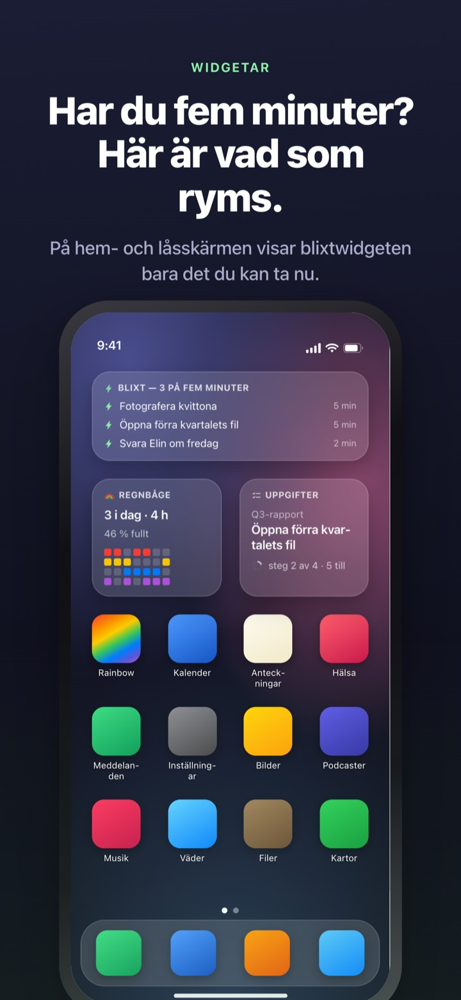

Se den fulla veckan komma.
Använd de fem minuter du får.
Ju mer dina uppgifter överlappar, desto djupare färg får regnbågen. Dela upp en stor uppgift i steg, så väntar steget du hinner i en lucka redan överst.
Regnbågen, uppdelning av uppgifter, timern och synkning med Mac är gratis.

Prova själv
”Kvartalsrapport Q3” är redan uppdelad i fem steg. Välj ett steg, ändra tiden eller vänd ett svar. Bara ett steg med ja på båda frågorna blir ett ministeg som du hinner på fem minuter.
Ser kalendern tom ut, men veckan tar ändå andan ur dig?
En kalender visar om något är inbokat, inte hur mycket som ligger ovanpå. Att tre deadlines hamnar i samma vecka märker du ofta först mitt i den, och de fem minuterna däremellan går åt till att läsa igenom att göra-listan. Rainbow of Desire ritar veckan som ett rutnät, färgar överlapp mörkare och lägger undan stegen som passar i en lucka.
Två frågor, sedan är det avgjort
När du delar upp en stor uppgift får varje steg två frågor. Kan du börja utan uppstart? Blir det klart inom fem minuter?
Bara två ja ger ett ministeg. Appen svarar först utifrån tid och ordval, och du vänder bara ett svar när det är fel.

En lucka? Titta högst upp
Svep en uppgift åt höger för att ge den en blixt, så hoppar den över kön och hamnar överst. Du behöver inte läsa hela listan.
Om stegen väntar på varandra bestämmer du en gång per grupp. I ordning visar första öppna steget, Valfri ordning det ministeg du kan ta nu.

Syns utan att öppna appen
Timern räknar ned till att händelsen tar slut, och tiden som är kvar syns även i Dynamic Island och på låsskärmen.
Widgetar för hem- och låsskärm visar vad du håller på med, vad som ryms på fem minuter och veckans regnbåge. (Widgetar ingår i Pro)

Igång i tre steg
- 1
Rita en händelse
Håll på en tom ruta på startdagen och tryck på slutdagen. Då står det ett streck i regnbågen.
- 2
Dela upp stora uppgifter
Tryck på en uppgift, skriv stegen och välj en tid. De två frågorna besvarar appen först.
- 3
Titta överst när det blir en lucka
Ministeg och uppgifter med blixt samlas överst utan att vänta på sin tur.
Det du möter på skärmen
- Mörk ruta · ljus ruta
- dagar du faktiskt jobbar med det, och resten fram till slutdatumet
- En full rad
- en dag med så mycket samtidigt att en försening skjuter hela dagen
- Ministeg
- ja på båda frågorna; ta det när du har fem minuter
- Kort fokustid
- ingen uppstart, men blir inte klart i ett ministeg; görs i ett svep
- Fokustid
- kräver uppstart eller tar 45 minuter eller mer; lägg det i avsatt tid
- Blixt
- din egen ”redo nu”-markering; hoppar högst upp
- I ordning · Valfri ordning
- om stegen väntar på varandra, valt en gång per grupp
- Tidsliggare
- veckans bokslut: det som är kvar, vunnen tid och återhämtning, hållet isär och aldrig ihopräknat
Tid räknas ihop nerifrån: en uppgifts tid är summan av dess steg.
Det du behöver i dag är gratis
Gratis
- Regnbågen (rutnät över hur fullt det är)
- Uppdelning i steg och de två frågorna
- Blixt och stegordning
- Timer i Dynamic Island och på låsskärmen
- Synkning med Rainbow Craft på Mac via iCloud
- Tidsliggaren för de senaste två veckorna
Rainbow Plus · Rainbow Pro
- Plus: händelsestatistik och tidsliggaren längre bak än två veckor
- Pro: allt i Plus plus widgetar för hem- och låsskärm
- Pro: importera från Kalender och visa löpande
- Pro: dela händelser, bara läsning
- Pro: låser också upp Rainbow Craft Pro på Mac
Var för sig som årsprenumeration eller engångsköp för alltid
Du betalar bara för att se tillbaka på tidigare veckor och för att ta saker utanför appen. Har du köpt Pro tidigare eller har månadsprenumeration är du fortfarande Pro.
Vanliga frågor
Behöver jag ett konto eller iCloud?
Inte om du använder den själv. Det finns ingen registrering och allt stannar på enheten. För andra enheter, Mac-appen eller delning loggar du in på iCloud.
Appen svarade fel på en fråga.
Tryck på steget och växla mellan Ja och Nej. Ditt eget svar går alltid före. Tryck på ”Tillbaka till appens bedömning” för att lämna tillbaka det. Ett steg utan tid räknas inte som ministeg, eftersom appen inte vet om det blir klart på fem minuter.
Kan jag dela med andra?
Med en inbjudningslänk delar du dina händelser för läsning (Pro), eller öppnar en att göra-lista som du och de inbjudna läser och skriver i tillsammans. Alla med länken kan gå med, så skicka den bara till dem du menar. Det har inget med Apples Familjedelning att göra.
Syns mina kalenderhändelser?
Händelser från kalendrarna du väljer visas i regnbågen och i dagsvyn (Pro). Appen läser bara och skriver ingenting tillbaka.
Kan jag bocka av i en widget?
Widgetar är bara för att titta. Tryck på en så öppnas dina uppgifter direkt, och bocka av där.
Måste Mac-appen köpas separat?
Rainbow Craft är en egen macOS-app i Mac App Store. Med samma iCloud-konto synkas uppgifter och veckoplaner av sig själva, och det kostar ingenting.
Finns mina äldre uppgifter kvar?
Ja. Uppgifter, steg och tiderna du har satt finns kvar. Etiketter från de gamla startvillkoren bedömer appen på nytt med de två frågorna.
Var sparas mina data?
Det finns ingen server. Allt ligger på din enhet och i din egen iCloud, där utvecklaren inte kan se det. Inget reklam-ID, ingen plats. Appen skickar bara anonym användningsstatistik som inte kan kopplas till dig och som går att stänga av i Inställningar.
Hur säger jag upp en prenumeration?
I Inställningar > Apple-konto > Prenumerationer. Den förnyas till samma pris om du inte säger upp senast 24 timmar innan perioden tar slut. För alltid är en engångsbetalning.
Har du kört fast eller ser något konstigt ut? Skriv till leeo@kakao.com. Du hittar även ett kontaktval i appens inställningar.